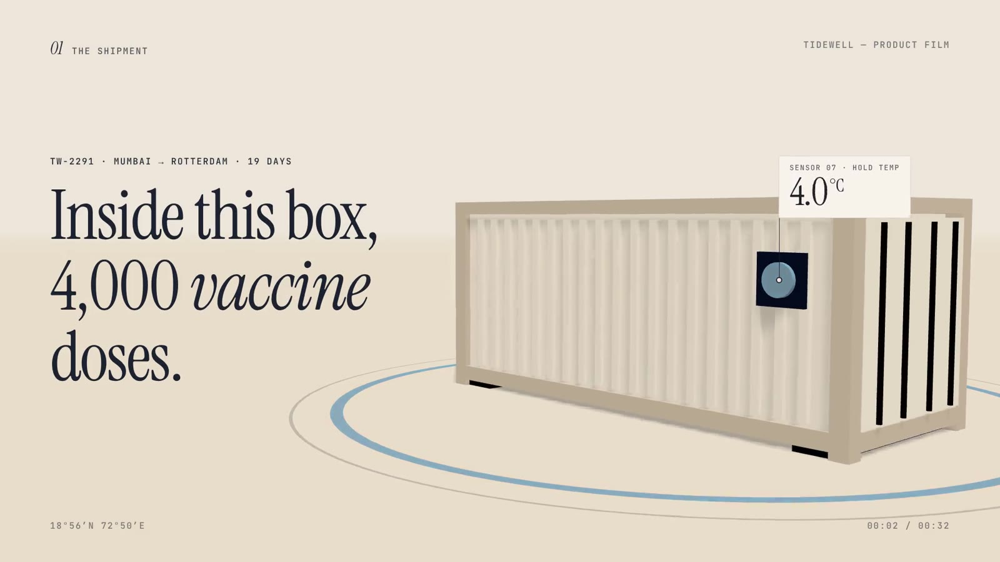
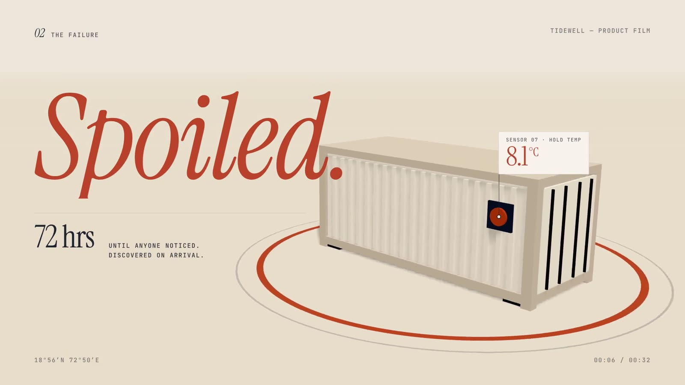
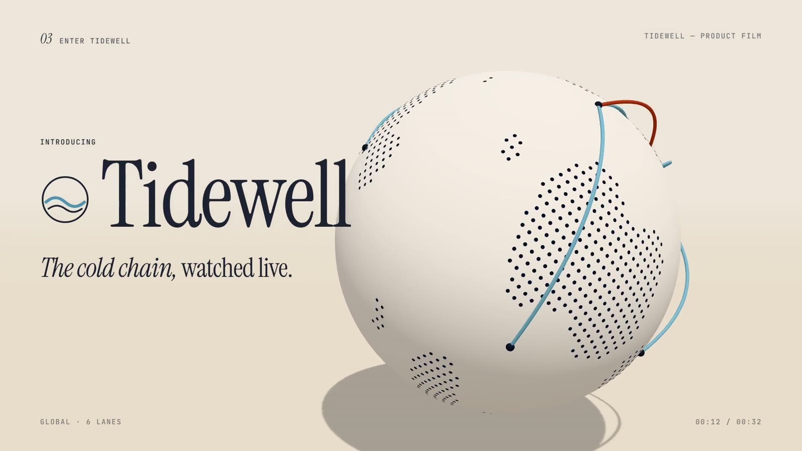
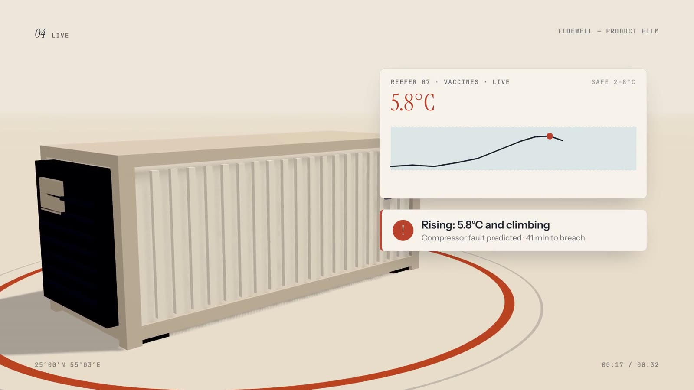
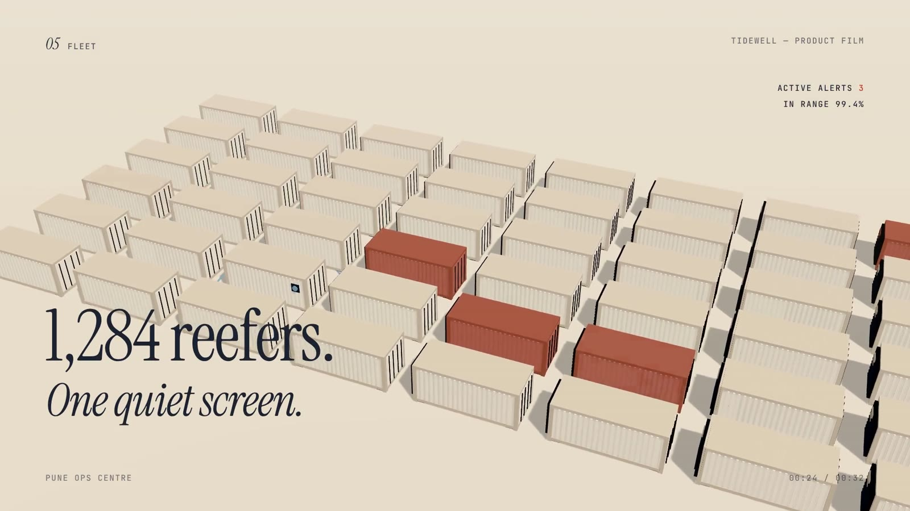
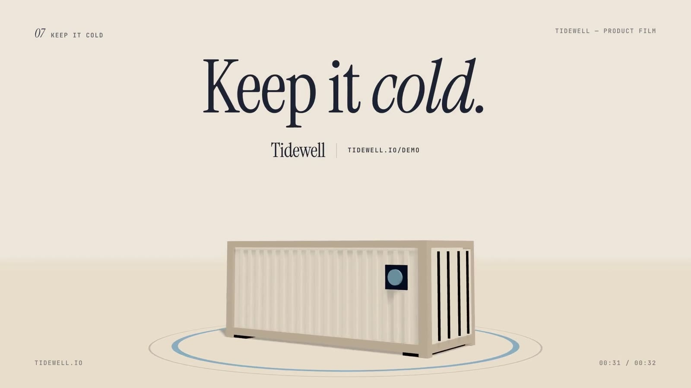

Tidewell
A cold-chain monitoring SaaS, shown as one continuous 3D camera journey in a warm clay world. No dark mode, no neon.
Tidewell is a fictional brand. We wrote the brief ourselves and built the film to the same standard and process as client work. All people, stats and quotes in it are invented.
The brief
Every logistics SaaS video looks the same: dark UI, glowing globe, stock trucks. The brief asked for the opposite: a film that feels like a premium design object and tells one story, a shipment that nearly fails and gets saved.
The idea
One unbroken camera journey. We follow a single vaccine container as it overheats, fly out to a clay globe for the reveal, return to catch the next shipment live, then crane up to show the whole fleet. Colour is rationed: oxblood only means danger, glacier blue only means safe.






How it's made
Real-time 3D (WebGL) rendered frame by frame, with matte clay materials, soft daylight shadows and fog into the paper background. HTML labels are pinned to 3D points, so the temperature tag follows the container as the camera moves. Editorial serif type with chapter markers keeps it calm and readable.
Type: Instrument Serif · Instrument Sans · JetBrains Mono
Credits
Concept, script, art direction, animation, sound design and edit: NexusPulse Studio.